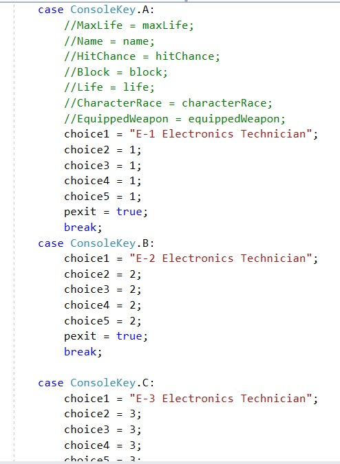
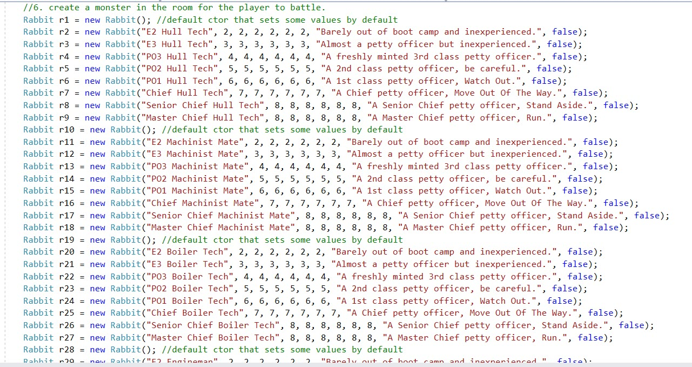
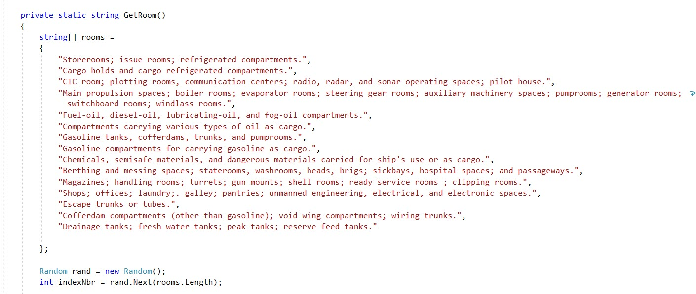

Snipe - Crew members in the engineering rates; someone who works in the engineering spaces and seldom is seen topside when underway. MM's (Machinist's Mates) and BT's (Boiler Technicians) are ultimate snipes. In today's modern gas turbine fleet, also includes GSM (Gas Turbine Specialist, Mechanic), GSE (Gas Turbine Specialist, Electrician), and EN (Engineman). It is believed that true snipes cannot stand direct sunlight or fresh air, must have machine oil in their coffee in order to survive, and get nosebleeds at altitudes above the waterline. It is also firmly believed that fresh-air sailors who venture into SNIPE COUNTRY are never seen again. Aka BLACK-HAND GANG (RN), BLACK GANG. See STOKER (RN).
Snipe Country - The engineering spaces, bilges, and voids where the snipes dwell. Considered to be extremely dangerous territory for non-snipes. "The snipes will get you" is commonly used to deter sailors from going too far below decks.
Twidget - Any of the electronics/computer/communications technicians.
Having never developed a game before, I needed some kind of background and since I was in the navy, I knew there was this rivalry between snipes and twidgets, so I called this game Snipes vs Twidgets.
If you are not familiar with the military, there are 9 paygrades in the enlisted ranks.
So I decided to give each rank progressively higher rates as shown here:
And I did the same for the monsters or snipes.
And we needed typical shipboard rooms for the game to play out.
